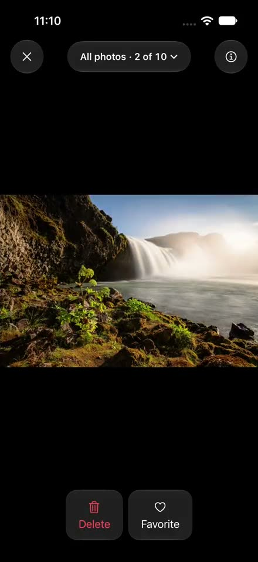
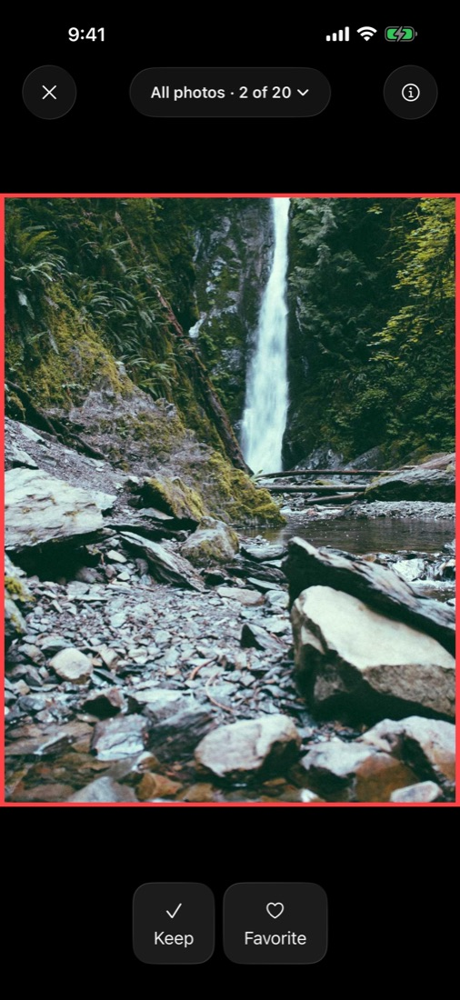
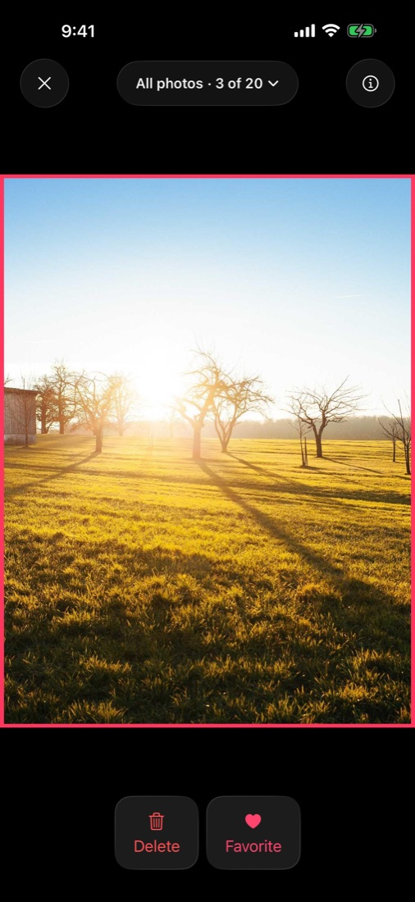
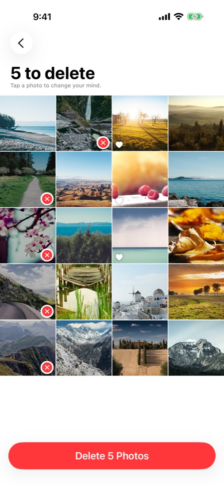

Clear your photo library, one small batch a day.
Thousands of photos you'll never look at again, and sorting them feels like a chore. FotoFree deals you a few at random. Swipe through them quickly and keep only what matters.
Free, with an optional one-time purchase · iPhone and iPad · iOS 26 or later

One swipe per photo.
Each photo fills the screen. Decide and move on.
Drag up
Mark it for deletion.
Drag down
Make it a favorite.
Swipe left
Keep it and see the next photo.
Swipe right
Go back to the last one.



Nothing goes until you check.
At the end of a batch you see every choice in one grid. Tap a photo to change your mind.
- Deleting always goes through Apple's own confirmation prompt.
- Deleted photos wait in Recently Deleted for 30 days, so you can still get them back.
- Want to clear one pile, like Screenshots? Pick the albums and deal a batch from just those.
Your photos stay on your device.
FotoFree does all its work on your device. There's nothing to sign up for and nothing to send.
- No account or sign-in.
- No servers. The app makes no network requests of its own.
- No ads, analytics or tracking.
- No third-party code.
App Store privacy label: Data Not Collected
Free to use, every day.
Support
Questions, problems or ideas: email chengchris8715@gmail.com. Please include your device and iOS version.
How it works
FotoFree shows a batch of random photos from your library, one at a time. Swipe left and right to move between them, drag a photo up to mark it for deletion, or down to mark it a favorite. When you finish, you check your choices in a grid, and deletions go through Apple’s own delete prompt. Nothing changes in Photos until then.
Common questions
Where do deleted photos go? To Recently Deleted in the Photos app, where they stay for 30 days and can be recovered.
How many batches can I do? One batch a day is free; the allowance resets at midnight in your time zone. A one-time purchase, Unlimited Batches, removes the limit for good.
I bought Unlimited Batches on another device. Tap Restore Purchases on the paywall or the resting screen, signed in with the same Apple Account.
Can I clear one album, like Screenshots? Yes. Tap the counter at the top of a batch, pick the albums, and tap Deal.
Some photos don’t load. FotoFree doesn’t download photos stored only in iCloud, so those may not show. Photos kept on the device always do.